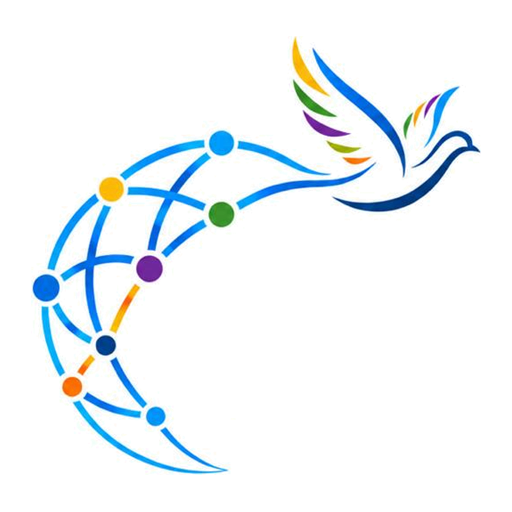
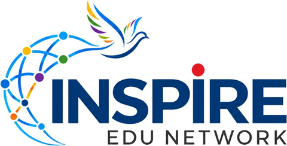

01
Logo
A navy wordmark, a globe drawn as a network of coloured nodes, and a dove in a spectrum wing: education, connection and peace. The coloured nodes are the source of the whole palette.

Primary logo
Use everywhere there is room: headers, login, documents, social cards. File: /brand/logo.png
Logo mark
Globe + dove only. For app icons, avatars, favicons and tight places. Files: /brand/logo-mark.png, favicon.ico, icon-192/512.png
Clear space & size
Keep free space equal to the height of the “I” around the logo. Minimum height: 40 px (primary) / 24 px (mark).

✓ On white or very light tints02
Colour
Sampled directly from the logo. Blue leads; the spectrum colours are small, bright accents — never large fills.
Brand blues
#00387A#0A4A97#006DE0#0682E4#019EFF#7CC0FA#B9DCFD#DCEDFE#F0F7FF#EAF3FE#F6FAFF#FFFFFFSpectrum accents & their soft tints
#FDBA07 · tint #FFF3CC#FF6C0B · tint #FFE4D3#E31E27 · tint #FDE1E2#3D932E · tint #E0F1DB#72299C · tint #EDDFF6135° blue-600 → skyText & lines
#0E2442#26405F#5B6F8D#8497B1#DCE8F5#C3D5EA03
Typography
One family — Montserrat — the same geometric sans as the wordmark. Heavy for headlines, regular for reading, spaced capitals for labels (like “EDU NETWORK”). Cyrillic and Latin are both supported.
--fs-6xl
--fs-5xl
--fs-4xl
--fs-2xl
--fs-lg
--fs-base / 1.65
INSPIRE EDU Network brings universities, NGOs and young leaders together. Body text is set at 16 px with generous line height and a calm blue-grey colour that stays readable on white.
--fs-lg
Larger introductory text, in the muted tone.
uppercase +16%
04
Space, shape & elevation
A 4 px grid. Everything is round — like the nodes of the globe. Shadows are always tinted blue, never grey.
Spacing scale
s-1 · 4s-2 · 8s-4 · 16s-6 · 24s-8 · 32s-12 · 48s-20 · 80Radii
Elevation
05
Components
All classes start with i-. Add /design/inspire.css and /design/inspire.js to any page.
Buttons
Cards
Interactive card
Lifts gently on hover. Icon tile uses a soft tint of the accent.
Spectrum card
A thin spectrum line marks featured content.
Tint card
Flat, for secondary information.
Form
Focus ring is a soft blue glow.
Chips, badges & alerts
Table
06
Motion
Gentle and slow, like a dove gliding. Only transform and opacity are animated, so it stays smooth and light on the processor. Everything switches off for people who prefer reduced motion.
Rise
Content fades up as it enters the screen. .i-reveal, 0.8 s, ease-out.
Float
Hero art drifts ±12 px over 7 s. .i-float
Drift
Pastel light blobs and network nodes move slowly in the background. .i-airy, .i-nodes
07
Rules
Light only
One bright theme. No dark mode, no dark sections, no black. The darkest colour allowed is Navy 800 — and only for text and the logo.
Blue leads, the spectrum sparkles
Roughly 80% white/tints, 15% blue, 5% spectrum accents. Use one accent per component.
Round and airy
Large radii, generous spacing (sections ≥ 80 px), thin blue-tinted borders and soft shadows.
Accessible by default
Body text ≥ 16 px with contrast ≥ 4.5:1, visible focus rings, reduced-motion respected, motion never carries meaning.
Files
/design/inspire.css tokens + components · /design/inspire.js behaviour · /design/tailwind.js Tailwind map · /brand/* logo files.